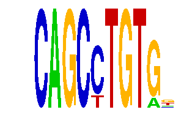

family_1 |
|---|
|  |
| Download PWM |
| Download instances (motifs) |
| Show motif distribution |
Query_ID | Query_Consensus | Subject_Name | Source_DB | Subject_ID | Length | Orientation | Offset | Divergence | Overlap | Subject_Consensus |
|---|---|---|---|---|---|---|---|---|---|---|
| family_1 | CAGCCTGTGN | YGACNNYACAR | JASPAR | PF0149 | 11 | reverse-complement | 4 | 0.365 | 6 | TGACNTCACAG |
| family_1 | CAGCCTGTGN | CTGCAGY | JASPAR | PF0101 | 7 | as given | -3 | 0.496 | 4 | CTGCAGC |
| family_1 | CAGCCTGTGN | PAX5 | HOCOMOCO | PAX5_HUMAN.H10MO.S | 8 | reverse-complement | -3 | 0.524 | 5 | GGCTGAGN |
| family_1 | CAGCCTGTGN | Mafb | JASPAR | MA0117.1 | 8 | reverse-complement | -4 | 0.747 | 4 | GCTGACNN |
| family_1 | CAGCCTGTGN | RNCTGNYNRNCTGNY | JASPAR | PF0154 | 15 | reverse-complement | -10 | 0.758 | 5 | GNCTGNCNGNCTGNC |
| family_1 | CAGCCTGTGN | TGACAGNY | JASPAR | PF0041 | 8 | as given | -3 | 0.773 | 5 | TGACAGNT |
Sequence | Start_position (from start) | Start_position (from end) | Average conservation | Best conservation score | Instance_with_best_CS | Best_Z-score | Instance_with_best_ZS | Strand |
|---|---|---|---|---|---|---|---|---|
| chr10:128020236-128021236 | 159 | 169 | 0.1123 | 0.466 | CAGCCTGTR. | 12.747894 | CAGCCTGTR. | -1 |
| chr4:134842576-134843576 | 428 | 438 | 0.0051 | 0.024 | CAGCCTGTR. | 12.747894 | CAGCCTGTR. | 1 |
| chr9:78327014-78328014 | 938 | 948 | 0.5793 | 1 | CAGCCTGTR. | 12.747894 | CAGCCTGTR. | 1 |
| chr8:86099626-86100626 | 560 | 570 | 0.0004 | 0.001 | CAGCYTGTGK | 14.065376 | CAGCYTGTGK | -1 |
| chr9:110666441-110667441 | 633 | 643 | 0.007 | 0.027 | CAGCCTGTR. | 14.065376 | CAGCYTGTGK | 1 |
| chr4:134842576-134843576 | 236 | 246 | 0.0014 | 0.003 | CAGCYTGTGK | 14.065376 | CAGCYTGTGK | 1 |
| chr17:48571335-48572335 | 361 | 371 | 0.0031 | 0.008 | CAGCYTGTGK | 14.065376 | CAGCYTGTGK | 1 |
| chr6:116930175-116931175 | 57 | 67 | 0.0565 | 0.085 | CAGCYTGTGK | 14.065376 | CAGCYTGTGK | 1 |
| chr4:107518583-107519583 | 148 | 158 | 0.0111 | 0.051 | CAGCCTGTR. | 12.747894 | CAGCCTGTR. | 1 |
| chr2:90805055-90806055 | 987 | 997 | 0.9899 | 0.999 | CAGCCTGTR. | 12.747894 | CAGCCTGTR. | -1 |
| chr5:115964921-115965921 | 542 | 552 | 0.0918 | 0.51 | CAGCYTGTGK | 12.747894 | CAGCCTGTR. | 1 |
| chr6:116930175-116931175 | 452 | 462 | 0.3001 | 0.439 | CAGCCTGTR. | 12.747894 | CAGCCTGTR. | 1 |
| chr1:137733305-137734305 | 823 | 833 | 0.0005 | 0.001 | CAGCYTGTGK | 12.747894 | CAGCCTGTR. | -1 |
| chr4:128970573-128971573 | 208 | 218 | 0.0004 | 0.002 | CAGCCTGTR. | 14.065376 | CAGCYTGTGK | 1 |
| chr3:10207108-10208904 | 612 | 622 | 0 | 0 | CAGCCTGTR. | 14.065376 | CAGCYTGTGK | 1 |
| chr17:24566035-24567035 | 238 | 248 | 0.0099 | 0.017 | CAGCCTGTR. | 12.747894 | CAGCCTGTR. | 1 |
| chr2:154768406-154769406 | 322 | 332 | 0.1138 | 0.223 | CAGCCTGTR. | 12.747894 | CAGCCTGTR. | 1 |
| chr14:66588950-66589950 | 743 | 753 | 0.0014 | 0.005 | CAGCCTGTR. | 14.065376 | CAGCYTGTGK | 1 |
| chr1:174420056-174421056 | 189 | 199 | 0.0023 | 0.005 | CAGCCTGTR. | 14.065376 | CAGCYTGTGK | 1 |